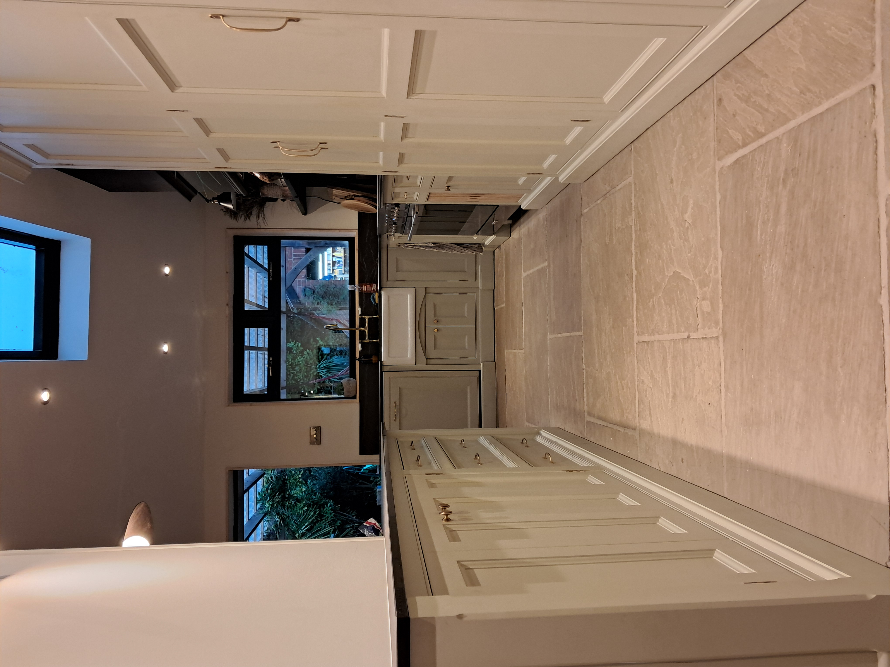

Featured Projects

Bespoke Kitchens

Modern Staircases

Media Walls

Based in Grimsby and established in 2013, Craftsman Joinery delivers bespoke kitchens, wardrobes, staircases, media walls, oak doors, outdoor structures and commercial joinery throughout Lincolnshire.

Phone: 07871 330441
Email: d.georgejoinery@yahoo.co.uk
Facebook: @DamienGeorgeCraftsmanwoodwork